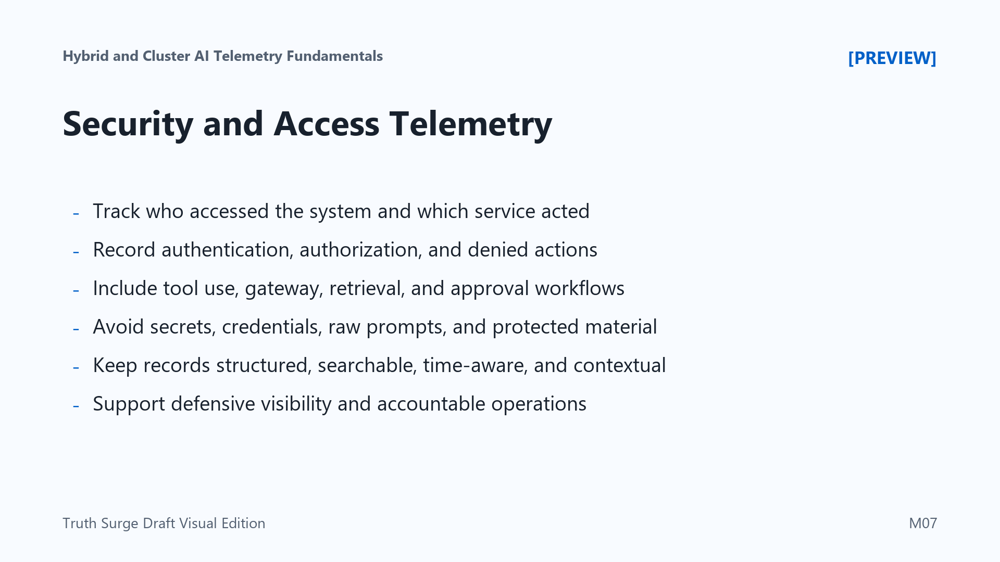

Security and Access Telemetry
Connecting to LMS... Progress: in progress

Narration
Security telemetry helps teams understand who accessed the system, which service acted, what policy decision occurred, and what sensitive resource was involved. In AI platforms, that visibility may need to cover ordinary application access plus model gateways, retrieval systems, tool-use workflows, human approval steps, administrative changes, and service identities.
Useful defensive signals include authentication results, authorization decisions, denied actions, service identity use, administrative changes, secret access, policy evaluation outcomes, and unusual access patterns. These signals help operators investigate whether a request followed the intended path and whether controls behaved consistently across clusters, environments, and data sources.
AI-specific workflows can make access questions subtle. A user may be allowed to call an assistant but not allowed to retrieve every document the assistant can search. A service may be allowed to use one model route but not another. A tool invocation may require approval, a policy check, or a narrower runtime identity. Telemetry should show the decision without exposing protected content.
Privacy-aware logging is essential. Logs and audit records should avoid secrets, credentials, raw sensitive prompts, personal data, and protected source material. The goal is structured, searchable, time-aware evidence connected to request or workload context. Security telemetry is not about collecting the most sensitive information. It is about defensive visibility, accountable operations, and faster investigation with appropriate data minimization.